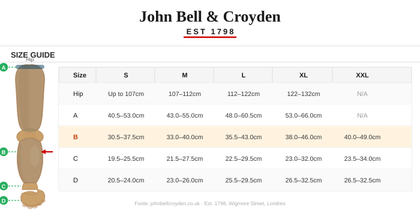
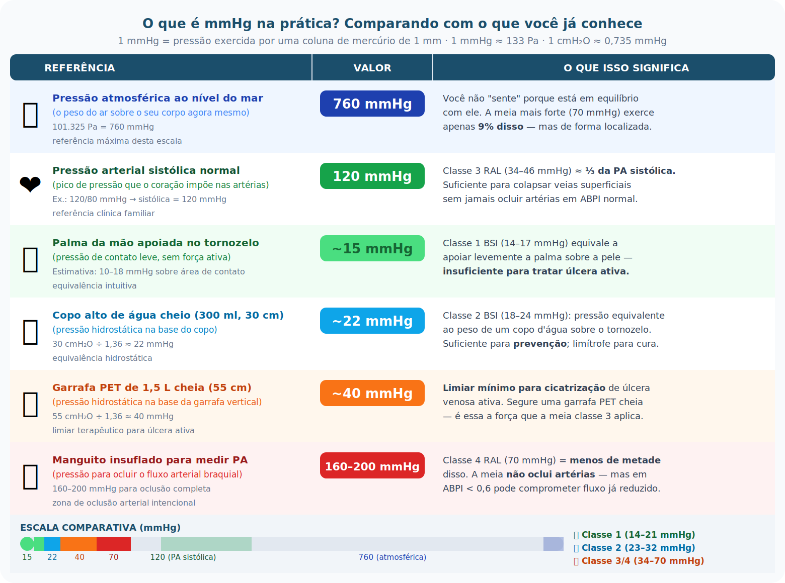
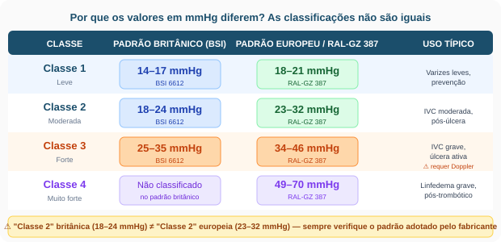
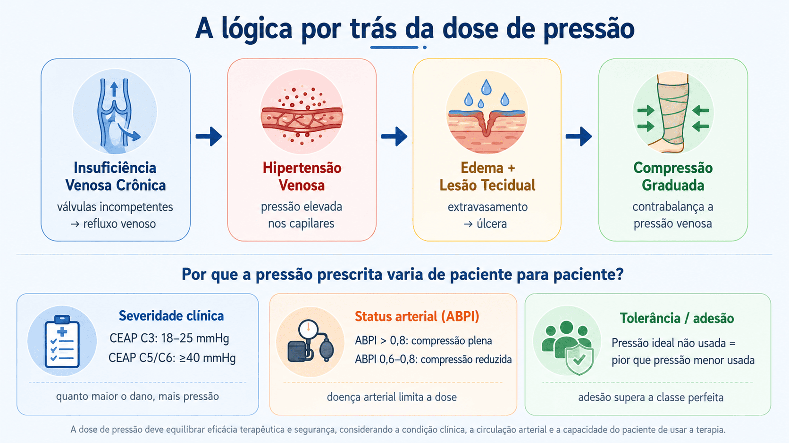
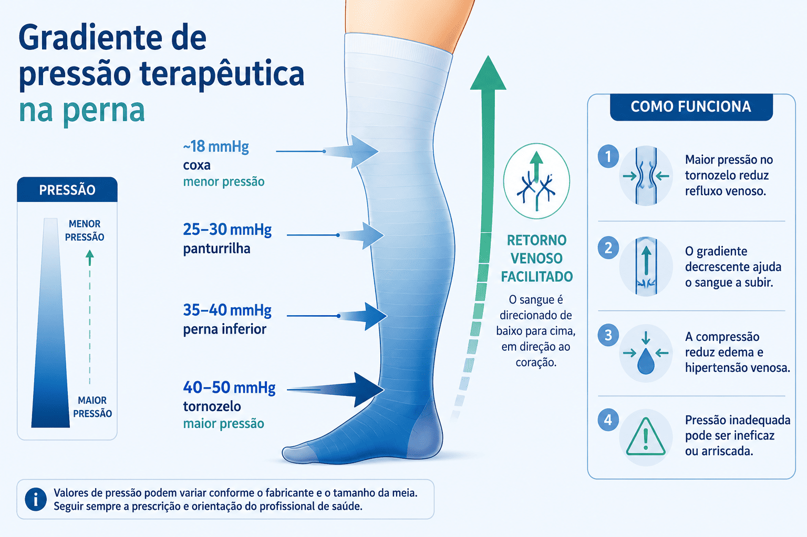
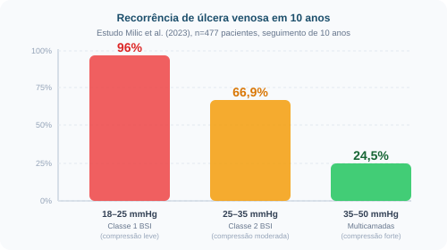

Quando a farmácia mais antiga de Londres ainda vende meias de compressão
A John Bell & Croyden, fundada em 1798 em Wigmore Street, Londres, é considerada a farmácia especializada em produtos médicos mais antiga ainda em atividade no Reino Unido. Mais de dois séculos depois de sua fundação, a casa comercializa meias de compressão graduada em múltiplas classes e tamanhos — e ilustra, de forma concreta, como a variedade de medidas e pressões reflete uma tradição clínica consolidada: cada medida corporal (quadril, coxa, panturrilha, tornozelo) corresponde a uma faixa de compressão distinta, exigindo avaliação individualizada antes da dispensação.

mmHg: o que esse número realmente significa?
Antes de falar em "40 mmHg de compressão", é preciso que esse número deixe de ser abstrato. O milímetro de mercúrio (mmHg) é uma unidade de pressão — a mesma usada para medir pressão arterial, pressão de perfusão ocular e, sim, meias de compressão. O quadro abaixo ancora cada faixa terapêutica em algo que você já conhece da vida cotidiana ou da clínica, para que a prescrição tenha dimensão física real.

Pressão "de meia" não é uma coisa só
Ao prescrever ou orientar o uso de meias de compressão para úlceras venosas, profissionais frequentemente se deparam com dois sistemas de classificação diferentes — o padrão britânico (BSI 6612) e o europeu/alemão (RAL-GZ 387) — que usam os mesmos nomes de "classe" para valores de pressão completamente distintos.
Isso gera confusão na prática: uma meia "Classe 2 britânica" entrega 18–24 mmHg, enquanto uma "Classe 2 europeia" entrega 23–32 mmHg. Prescrever sem especificar o padrão pode resultar em compressão insuficiente ou excessiva — com consequências clínicas reais.

A úlcera venosa é consequência de pressão — e precisa de pressão para curar
A insuficiência venosa crônica (IVC) ocorre quando as válvulas venosas perdem função, permitindo refluxo de sangue. Isso eleva a pressão hidrostática nos capilares do tornozelo — a chamada hipertensão venosa. O extravasamento de proteínas e células inflamatórias para o espaço intersticial compromete a nutrição tecidual, resultando em edema persistente, lipodermatoesclerose e, eventualmente, ulceração.
A compressão graduada age diretamente sobre esse mecanismo: ela aumenta a pressão tecidual extravascular, reduz o calibre das veias superficiais, melhora a função da bomba muscular da panturrilha e facilita o retorno venoso — revertendo a fisiopatologia central da úlcera.

O gradiente decrescente: mais pressão embaixo, menos em cima
A eficácia da meia de compressão depende não apenas do valor de pressão, mas da sua distribuição ao longo da perna. O princípio biomecânico é o gradiente decrescente: a pressão máxima é exercida no tornozelo (onde a pressão venosa hidrostática é maior) e diminui progressivamente em direção à coxa.
Esse gradiente cria um diferencial de pressão que "empurra" o sangue venoso de volta ao coração, mimetizando e potencializando o trabalho da bomba muscular. Uma meia sem esse gradiente — ou com gradiente invertido — pode agravar o retorno venoso em vez de facilitá-lo.

Mais pressão, menos recorrência — mas com limites
Um estudo prospectivo randomizado de Milic et al. (2023), com 477 pacientes e seguimento de 10 anos, demonstrou de forma contundente a relação dose-resposta entre pressão de compressão e recorrência de úlcera venosa.

🎯 Compressão para cicatrização
- Úlcera ativa (CEAP C6): ≥ 40 mmHg no tornozelo
- Sistemas multicamadas ou meia classe 3 RAL (34–46 mmHg) são preferidos
- Pressão acima de 45 mmHg associada a maior proporção de cicatrização em 24 semanas
- Compressão multicamadas e meia única de alta compressão têm eficácia clínica similar
🔄 Compressão para prevenção de recorrência
- Úlcera cicatrizada (CEAP C5): meia classe 2 ou 3
- Revisão Cochrane (2024): evidência ainda incerta sobre a classe ideal
- Adesão ao uso diário supera a diferença entre classes em termos de resultado
- Paciente não-aderente tem risco de recorrência significativamente maior (p ≤ 0,0001)
Alta pressão pode ser perigosa sem avaliação arterial
A doença arterial periférica coexiste em uma parcela dos pacientes com úlceras venosas. Aplicar compressão forte em um membro com fluxo arterial comprometido pode causar isquemia tecidual e agravar — ou mesmo criar — uma lesão.
plena indicada
reduzida (com cautela)
contraindicada
prescrever classe 3 ou 4
A avaliação com Doppler portátil para obter o índice tornozelo-braquial (ABPI) é um passo inegociável antes de prescrever compressão de alta pressão. Sem esse dado, o profissional não tem como distinguir uma úlcera puramente venosa de uma úlcera mista — que exige abordagem completamente diferente.
Cinco pontos para a prática clínica
- A pressão certa depende do estágio clínico (classificação CEAP): úlcera ativa exige ≥ 40 mmHg; prevenção de recorrência pode ser feita com 23–32 mmHg (RAL Classe 2).
- "Classe 2" não é universal: sempre especifique se o padrão é britânico (BSI, menor pressão) ou europeu/alemão (RAL, maior pressão) ao prescrever ou orientar o paciente.
- O gradiente é tão importante quanto o valor absoluto: a pressão máxima deve estar no tornozelo, decrescendo em direção à coxa — isso é o que move o sangue venoso de volta.
- Faça o Doppler antes da classe alta: ABPI < 0,6 contraindica compressão; entre 0,6 e 0,8, reduza a pressão e monitore.
- Adesão supera perfeição de classe: um paciente que usa diariamente uma meia de pressão moderada tem melhores desfechos do que aquele que não tolera a meia de alta pressão e a abandona.
Teste o que você aprendeu
Responda às questões abaixo com base no que foi apresentado no infográfico. Clique em "Verificar" após escolher sua resposta.
Cinco perguntas que valem a conversa
Não há resposta única para estas questões — elas existem para abrir o raciocínio clínico, não para fechá-lo.
-
1Se dois pacientes têm úlcera venosa ativa no mesmo estágio CEAP, mas um deles tem ABPI de 0,7 e o outro de 0,9 — em que medida a "mesma doença" justifica o "mesmo tratamento"? O que muda na sua tomada de decisão ao prescrever compressão para cada um deles?
-
2Um paciente usa há dois anos uma meia "Classe 2" prescrita por outro profissional, sem que o padrão (BSI ou RAL) tenha sido especificado. A úlcera não cicatrizou. Antes de trocar o curativo, o que você investigaria na meia — e por quê esse dado pode ser mais relevante do que o produto usado no leito da ferida?
-
3Os dados de Milic et al. mostram que compressão insuficiente leva a 96% de recorrência em 10 anos. No entanto, a revisão Cochrane aponta que adesão ao uso diário supera a diferença entre classes. Como você conciliaria esses dois achados ao orientar um paciente que diz que a meia "aperta demais" e ameaça abandoná-la?
-
4A John Bell & Croyden existe desde 1798 e ainda vende meias de compressão com guia de medidas por quatro pontos anatômicos. Isso sugere que a variabilidade corporal entre pacientes é reconhecida há mais de dois séculos como determinante da eficácia do tratamento. Por que, então, ainda é comum encontrar prescrições que indicam apenas "meia de compressão Classe 2" sem especificar medidas, padrão ou fabricante?
-
5A hipertensão venosa é causada por pressão — e tratada com pressão. Há algo paradoxal nisso? O que esse aparente paradoxo revela sobre a diferença entre a causa de uma doença e o mecanismo de sua reversão, e como esse raciocínio se aplica a outros tratamentos que você conhece?
Referências
- Krizanova K et al. Chronic venous insufficiency and venous leg ulcers: Aetiology, on the pathophysiology-based treatment. Int Wound J. 2024; 21:e14405.
- de Moraes Silva MA et al. Compression for preventing recurrence of venous ulcers. Cochrane Database Syst Rev. 2024, Issue 3: CD002303.
- Milic D et al. The influence of different sub-bandage pressure values in the prevention of recurrence of venous ulceration — a ten-year follow-up. Phlebology. 2023; 38: 458-465.
- O'Meara S et al. Compression for venous leg ulcers. Cochrane Database Syst Rev. 2012; 11: CD000265.
- National Wound Care Strategy Programme. Recommendations for Leg Ulcers. 2023. NHS England.
- Wounds International. Compression Therapy — Clinical Guidelines. 2023. woundsinternational.com
- Clarke-Moloney M et al. Randomised controlled trial comparing European standard class 1 to class 2 compression stockings for ulcer recurrence and patient compliance. Int Wound J. 2014; 11: 404-8.
- BSI 6612:2018 — Specification for graduated compression hosiery. British Standards Institution.
- RAL-GZ 387:2008 — Medical compression hosiery. RAL Deutsches Institut für Gütesicherung und Kennzeichnung.